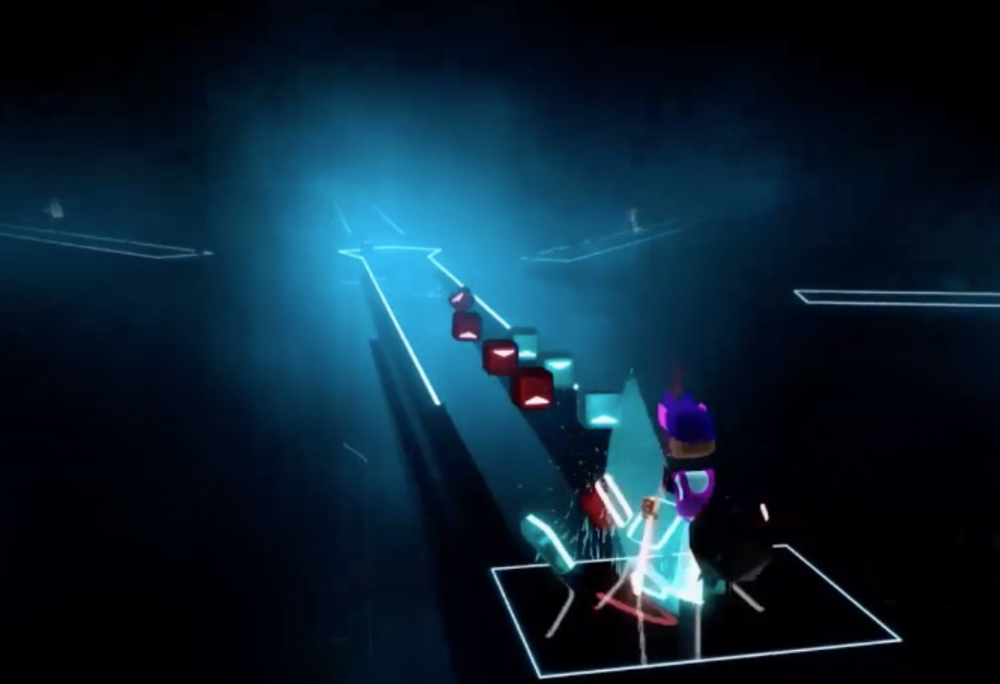

映画『アバター』シリーズ特集！2作目の最新作や『アバター』の映像技術を体感できる作品を配信で楽しもう｜Disney+（ディズニープラス）公式
映画『THE FIRST SLAM DUNK』
FINAL FANTASY VII REMAKE | SQUARE ENIX
CAPCOM:STREET FIGHTER V CHAMPION EDITION 公式サイト
【モーションキャプチャとは？】原理や活用シーンを種類別に解説 |
モーションキャプチャーシステム販売｜株式会社スパイス
医療機器ソフトウェア開発を行うHoloeyes
「プロダクトドリブン」の新体制を発表 | Holoeyes株式会社のプレスリリース
踊り手＆初音ミクがモーションキャプチャーで共演！
ハイレベルな振り付けを高精度で再現する感動の技術に「実に、素晴らしい…！」と絶賛の嵐【踊り手：市川】 | ニコニコニュース
オリジナル
映画
「アバター」や「THE FIRST SLAM DUNK」などの作品はモーションキャプチャーが利用されている有名な映画である。モーションキャプチャーを用いて俳優の動きをリアルタイムでCGキャラクターに変換している。モーションキャプチャーを用いることで、細かい動きや専門性のある動きをするコンテンツを効率的で繊細にCGキャラクターに変換することができる。また、身体の動きだけでなく、表情も変換することができる。
.png)
ゲーム
「FINAL FANTASY VII REMAKE」や「ストリートファイターV」などの作品はモーションキャプチャーが利用されているゲームである。モーションキャプチャーを用いてキャラクターの自然な動きや多彩な技をリアルに表現している。 また、モーションキャプチャーはゲームのコントローラにも使用されている。昔のコントローラは有線やボタン式であったが、現在ではモーションキャプチャー機能が備わった無線のものが存在している。モーションキャプチャーで現実の動きとアバターの動きを連動し、同時にVRを用いることで、仮想現実内のアバターになりきり、ゲームをしたり、他人と交流をすることができる。

スポーツ分析
スポーツ選手の動作解析やパフォーマンス向上のために、モーションキャプチャーが利用されている。ゴルフや野球のスイング解析、陸上競技のフォーム改善など、選手の動きを詳細に捉えることで、より効果的なトレーニング方法や技術指導が可能になり、ダンスや体操などの身体運動を学習の対象とする分野にとって、動きの振り返りや熟練者と学習者の動きのずれをより詳細に観察することができる。 また、けがの原因となる不自然な動きを特定することが可能であり、けがの原因究明と予防に貢献している。
.png)
医療
モーションキャプチャーは、患者の歩行や動作の分析にも利用されており、リハビリテーションや運動療法の効果を評価するための重要なツールとなっている。患者の動作、各関節や骨にかかる力をキャプチャーすることにより、立体感のある筋骨格モデルの動作を表示、解析することができ、データに対する直感的な理解が可能となる。 また、VRを用いた手術シミュレーションを行うことにより、重大な手術の前に手術の予行練習ができ、医者も患者もより負担の少ない環境で手術を行うことができる。
.png)
アニメーション制作
VTuberのアニメーションにモーションキャプチャーの技術が用いられている。細かいジェスチャーや表情の変化も正確にキャプチャーが可能。より自然で魅力的なキャラクターを作り出すことができる。 VTuberだけでなく、アニメやゲームのアニメーション制作でも、モーションキャプチャーは広く利用されている。これにより、手作業では再現が難しい複雑な動きやリアルな演技を簡単に取り入れることが可能となる。
.png)